전기공사기사 (2021-09-12 기출문제)
1과목: 전기응용 및 공사재료
1. 일정 전류를 통하는 도체의 온도상승 θ와 반지름 r의 관계는?
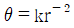
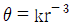
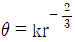
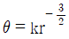
(정답률: 55%)

2. 열차저항에 대한 설명 중 틀린 것은?
- 주행저항은 베어링 부분의 기계적 마찰, 공기저항 등으로 이루어진다.
- 열차가 곡선구간을 주행할 때 곡선의 반지름에 비례하여 받는 저항을 곡선저항이라 한다.
- 경사궤도를 운전 시 중력에 의해 발생하는 저항을 구배저항이라 한다.
- 열차 가속 시 발생하는 저항을 가속저항이라 한다.
(정답률: 49%)
3. 단상 유도전동기 중 기동 토크가 가장 큰 것은?
- 반발 기동형
- 분상 기동형
- 콘덴서 기동형
- 셰이딩 코일형
(정답률: 70%)
4. 정류방식 중 정류 효율이 가장 높은 것은? (단, 저항부하를 사용한 경우이다.)
- 단상 반파방식
- 단상 전파방식
- 3상 반파방식
- 3상 전파방식
(정답률: 61%)
5. 25℃의 물 10ℓ를 그릇에 넣고 2㎾의 전열기로 가열하여 물의 온도를 80℃로 올리는 데 20분이 소요되었다. 이 전열기의 효율(%)은 약 얼마인가?
- 59.5
- 68.8
- 84.9
- 95.9
(정답률: 41%)
6. 직류전동기 속도제어에서 일그너 방식이 채용되는 것은?
- 제지용 전동기
- 특수한 공작기계용
- 제철용 대형압연기
- 인쇄기
(정답률: 57%)
7. 전기화학용 직류전원의 요구조건이 아닌 것은?
- 저전압 대전류일 것
- 전압 조정이 가능할 것
- 일정한 전류로서 연속운전에 견딜 것
- 저전류에 의한 저항손의 감소에 대응할 것
(정답률: 44%)
8. 100W 전구를 유백색 구형 글로브에 넣었을 경우 글로브의 효율(%)은 약 얼마인가? (단, 유백색 유리의 반사율은 30%, 투과율은 40%이다.)
- 25
- 43
- 57
- 81
(정답률: 52%)
9. 전기철도의 매설관측에서 시설하는 전식 방지 방법은?
- 임피던스본드 설치
- 보조귀선 설치
- 이선율 유지
- 강제배류법 사용
(정답률: 42%)
10. 전해질용액의 도전율에 가장 큰 영향을 미치는 것은?
- 전해질용액의 양
- 전해질용액의 농도
- 전해질용액의 빛깔
- 전해질용액의 유효단면적
(정답률: 61%)
11. KS C 8309에 따른 옥내용 소형 스위치 중 텀블러스위치의 정격전류가 아닌 것은?
- 5A
- 10A
- 15A
- 20A
(정답률: 44%)
12. 램프효율이 우수하고 단색광이므로 안개지역에서 가장 많이 사용되는 광원은?
- 수은등
- 나트륨등
- 크세논등
- 메탈할라이드등
(정답률: 61%)
13. 한국전기설비규정에 따른 철탑의 주주재로 사용하는 강관의 두께는 몇 mm 이상이어야 하는가?
- 1.6
- 2.0
- 2.4
- 2.8
(정답률: 40%)
14. 한국전기설비규정에 따른 플로어덕트공사의 시설조건 중 연선을 사용해야만 하는 전선의 최소 단면적 기준은? (단, 전선의 도체는 구리선이며 연선을 사용하지 않아도 되는 예외조건은 고려하지 않는다.)
- 6mm2 초과
- 10mm2 초과
- 16mm2 초과
- 25mm2 초과
(정답률: 42%)
15. 공칭전압 22.9kV인 3상4선식 다중접지방식의 변전소에서 사용하는 피뢰기의 정격전압(kV)은?
- 20
- 18
- 24
- 21
(정답률: 42%)
16. 한국전기설비규정에 따른 상별 전선의 색상으로 틀린 것은?
- L1 : 백색
- L2 : 흑색
- L3 : 회색
- N : 청색
(정답률: 56%)
17. 저압인류애자에는 전압선용과 중성선용이 있다. 각 용도별 색깔이 옳게 연결된 것은?
- 전압선용 - 녹색, 중성선용 - 백색
- 전압선용 - 백색, 중성선용 - 녹색
- 전압선용 - 적색, 중성선용 - 백색
- 전압선용 - 청색, 중성선용 - 백색
(정답률: 50%)
18. 기계기구의 단자와 전선의 접속에 사용되는 자재는?
- 터미널 러그
- 슬리브
- 와이어커넥터
- T형 커넥터
(정답률: 51%)
19. 축전지의 충전방식 중 전지의 자기방전을 보충함과 동시에 상용부하에 대한 전력공급은 충전기가 부담하도록 하되, 충전기가 부담하기 어려운 일시적인 대전류 부하는 축전지로 하여금 부담하게 하는 충전방식은?
- 보통충전
- 과부하충전
- 세류충전
- 부동충전
(정답률: 58%)
20. 네온방전등에 대한 설명으로 틀린 것은?
- 네온방전등에 공급하는 전로의 대지전압은 300V 이하로 하여야 한다.
- 네온변압기 2차측은 병렬로 접속하여 사용하여야 한다.
- 관등회로의 배선은 애자공사로 시설하여야 한다.
- 관등회로의 배선에서 전선 상호간의 이격거리는 60mm 이상 으로 하여야 한다.
(정답률: 44%)
2과목: 전력공학
21. 3상 수직배치인 선로에서 오프셋을 주는 주된 이유는?
- 유도장해 감소
- 난조 방지
- 철탑 중량 감소
- 단락 방지
(정답률: 48%)
22. 3상 변압기의 단상 운전에 의한 소손 방지를 목적으로 설치하는 계전기는?
- 단락계전기
- 결상계전기
- 지락계전기
- 과전압계전기
(정답률: 58%)
23. 선로정수를 평형되게 하고, 근접 통신선에 대한 유도장해를 줄일 수 있는 방법은?
- 연가를 시행한다.
- 전선으로 복도체를 사용한다.
- 전선로의 이도를 충분하게 한다.
- 소호리액터 접지를 하여 중성점 전위를 줄여준다.
(정답률: 60%)
24. 송전단, 수전단 전압을 각각 Es, Er이라 하고 4단자 정수를 A, B, C, D라 할 때 전력원선도의 반지름은?
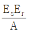
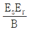
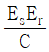
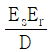
(정답률: 51%)
25. 가공선 계통을 지중선 계통과 비교할 때 인덕턴스 및 정전 용량은 어떠한가?
- 인덕턴스, 정전용량이 모두 작다.
- 인덕턴스, 정전용량이 모두 크다.
- 인덕턴스는 크고, 정전용량은 작다.
- 인덕턴스는 작고, 정전용량은 크다.
(정답률: 52%)
26. 전력계통에서 전력용 콘덴서와 직렬로 연결하는 리액터로 제거되는 고조파는? (단, 기본주파수에서 리액턴스 기준으로 콘덴서 용량의 이론상 4% 높은 리액터 값을 적용한다.)
- 제2고조파
- 제3고조파
- 제4고조파
- 제5고조파
(정답률: 66%)
27. 취수구에 제수문을 설치하는 목적은?
- 낙차를 높이기 위해
- 홍수위를 낮추기 위해
- 모래를 배제하기 위해
- 유량을 조정하기 위해
(정답률: 56%)
28. 송전계통의 중성점 접지용 소호리액터의 인덕턴스 L은? (단, 선로 한 선의 대지정전용량을 C라 한다.)
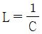
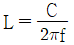
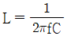
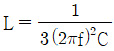
(정답률: 60%)
29. 송전선로의 개폐 조작에 따른 개폐서지에 관한 설명으로 틀린 것은?
- 회로를 투입할 때보다 개방할 때 더 높은 이상전압이 발생 한다.
- 부하가 있는 회로를 개방하는 것보다 무부하를 개방할 때 더 높은 이상전압이 발생한다.
- 이상전압이 가장 큰 경우는 무부하 송전선로의 충전전류를 차단할 때이다.
- 이상전압의 크기는 선로의 충전전류 파고값에 대한 배수로 나타내고 있다.
(정답률: 33%)
30. 가공 송전선로의 정전용량이 0.0⑤㎌/㎞이고, 인덕턴스는 1.8mH/㎞이다. 이때 파동임피던스는 몇 Ω 인가?
- 360
- 600
- 900
- 1000
(정답률: 50%)
31. 원자로에 사용되는 감속재가 구비하여야 할 조건으로 틀린 것은?
- 중성자 에너지를 빨리 감속시킬 수 있을 것
- 불필요한 중성자 흡수가 적을 것
- 원자의 질량이 클 것
- 감속능 및 감속비가 클 것
(정답률: 68%)
32. 송전단 전압 6600V, 길이 2㎞의 3상3선식 배전선에 의해서 지상역률 0.8의 말단부하에 전력이 공급되고 있다. 부하단 전압이 6000V를 내려가지 않도록 하기 위해서 부하를 최대 몇 ㎾까지 허용할 수 있는가? (단, 선로 1선당 임피던스는 Z＝0.8＋j0.4 Ω/㎞이다.)
- 818
- 945
- 1332
- 1636
(정답률: 31%)
33. 저압 망상식(Network) 배선방식의 장점이 아닌 것은?
- 감전사고가 줄어든다.
- 부하 증가 시 적응성이 양호하다.
- 무정전 공급이 가능하므로 공급 신뢰도가 높다.
- 전압변동이 적다.
(정답률: 59%)
34. 배전선로에서 사고범위의 확대를 방지하기 위한 대책으로 옳지 않은 것은?
- 선택접지계전방식 채택
- 자동고장 검출장치 설치
- 진상콘덴서 설치하여 전압보상
- 특고압의 경우 자동구분개폐기 설치
(정답률: 65%)
35. 수변전설비에서 변압기의 1차측에 설치하는 차단기의 용량은 어느 것에 의하여 정하는가?
- 변압기 용량
- 수전계약용량
- 공급 측 단락용량
- 부하설비용량
(정답률: 59%)
36. 각 수용가의 수용설비용량이 50㎾, 100㎾, 80㎾, 60㎾, 150㎾이며, 각각의 수용률이 0.6, 0.6, 0.5, 0.5, 0.4이다. 이때 부하의 부등률이 1.3이라면 변압기 용량은 약 몇 kVA가 필요한가? (단, 평균 부하역률은 80%라고 한다.)
- 142
- 165
- 183
- 212
(정답률: 51%)
37. 변류기의 비오차는 어떻게 표시되는가? (단, a는 공칭변류비이고 측정된 1, 2차 전류는 각각 I1, I2 이다.)
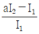
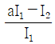
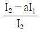
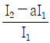
(정답률: 42%)
38. 부하전력 및 역률이 같을 때 전압을 n배 승압하면 전압 강하율과 전력손실은 어떻게 되는가?
- 전압강하율 : 1/n, 전력손실 : 1/n2
- 전압강하율 : 1/n2, 전력손실 : 1/n
- 전압강하율 : 1/n, 전력손실 : 1/n
- 전압강하율 : 1/n2, 전력손실 : 1/n2
(정답률: 55%)
39. 어떤 화력 발전소의 증기조건이 고온열원 540℃, 저온열원 30℃일 때 이 온도 간에서 움직이는 카르노 사이클의 이론 열효율(%)은?
- 85.2
- 80.5
- 75.3
- 62.7
(정답률: 33%)
40. 복도체를 사용하는 가공전선로에서 소도체 사이의 간격을 유지하여 소도체 간의 꼬임 현상이나 충돌 현상을 방지하기 위하여 설치하는 것은?
- 아모로드
- 댐퍼
- 스페이서
- 아킹혼
(정답률: 59%)
3과목: 전기기기
41. 반도체 소자 중 3단자 사이리스터가 아닌 것은?
- SCS
- SCR
- GTO
- TRIAC
(정답률: 61%)
42. 전파 정류회로와 반파 정류회로를 비교한 내용으로 틀린 것은? (단, 다이오드를 이용한 정류회로이고, 저항부하인 경우이다.)
- 반파 정류회로는 변압기 철심의 포화를 일으킨다.
- 반파 정류회로의 회로구조는 전파 정류회로와 비교하여 간단 하다.
- 반파 정류회로는 전파 정류회로에 비해 출력전압 평균값을 높게 할 수 있다.
- 전파 정류회로는 반파 정류회로에 비해 출력전압 파형의 리플성분을 감소시킨다.
(정답률: 45%)
43. 25°의 스텝 각을 갖는 스테핑 모터에 초(s)당 500개의 펄스를 가했을 때 회전속도는 약 몇 r/s인가?
- 20
- 35
- 50
- 125
(정답률: 47%)
44. Δ결선 변압기의 한 대가 고장으로 제거되어 V결선으로 전력을 공급할 때, 고장 전 전력에 대하여 몇 %의 전력을 공급할 수 있는가?
- 57.7
- 66.7
- 75.0
- 81.6
(정답률: 62%)
45. 3상 전원을 이용하여 2상 전압을 얻고자 할 때 사용하는 결선 방법은?
- 환상 결선
- Fork 결선
- Scott 결선
- 2중 3각 결선
(정답률: 65%)
46. 변압기의 등가회로 상수를 결정하는 데 필요하지 않은 시험은?
- 단락시험
- 개방시험
- 구속시험
- 저항측정
(정답률: 42%)
47. 3상 유도전동기의 제3고조파에 의한 기자력의 회전방향 및 회전속도와 기본파 회전자계에 대한 관계로 옳은 것은?
- 고조파는 0으로 공간에 나타나지 않는다.
- 기본파와 역방향이고 3배의 속도로 회전한다.
- 기본파와 같은 방향이고 3배의 속도로 회전한다.
- 기본파와 같은 방향이고 ω/3 의 속도로 회전한다.
(정답률: 28%)
48. 회전 전기자형 회전변류기에 관한 설명으로 틀린 것은?
- 회전자는 회전자계의 방향과 반대로 회전한다.
- 직류측 전압을 변경하려면 여자전류를 가감하여 조정한다.
- 기계적 출력을 발생할 필요가 없으므로 축과 베어링은 작아도 된다.
- 3상 교류는 슬립링을 통하여 회전자에 공급하며 회전자에 있는 정류자의 브러시에서 직류가 출력된다.
(정답률: 22%)
49. 전부하 전류 1A, 역률 85%, 속도 7500rpm, 전압 100V, 주파수 60㎐인 2극 단상 직권정류자전동기가 있다. 전기 자와 직권 계자권선의 실효저항의 합이 40Ω이라 할 때 전부하 시 속도기전력(V)은? (단, 계자자속은 정현적으로 변하며 브러시는 중성축에 위치하고 철손은 무시한다.)
- 34
- 45
- 53
- 64
(정답률: 25%)
50. 직류 직권전동기에서 회전수가 n일 때 토크 T는 무엇에 비례하는가?
- n2
- n
- 1/n
- 1/n2
(정답률: 43%)
51. 3상 권선형 유도전동기의 기동법은?
- 분상기동법
- 반발기동법
- 커패시터기동법
- 2차 저항기동법
(정답률: 62%)
52. 돌극형 동기발전기에서 직축 동기리액턴스 Xd와 횡축 동기 리액턴스 Xq의 관계로 옳은 것은?
- Xd ＜ Xq
- Xd ≪ Xq
- Xd = Xq
- Xd ＞ Xq
(정답률: 50%)
53. 그림은 직류전동기의 속도특성 곡선이다. 가동복권전동기의 특성곡선은?
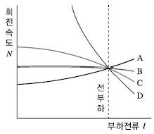
- A
- B
- C
- D
(정답률: 37%)
54. 동일 용량의 변압기 두 대를 사용하여 13200V의 3상식 간선에서 380V의 2상 전력을 얻으려면 T좌 변압기의 권수비는 약 얼마로 해야 되는가?
- 28
- 30
- 32
- 34
(정답률: 33%)
55. 유도자형 고주파발전기의 특징이 아닌 것은?
- 회전자 구조가 견고하여 고속에서도 잘 견딘다.
- 상용 주파수보다 낮은 주파수로 회전하는 발전기이다.
- 상용 주파수보다 높은 주파수의 전력을 발생하는 동기발전기이다.
- 극수가 많은 동기발전기를 고속으로 회전시켜서 고주파 전압을 얻는 구조이다.
(정답률: 47%)
56. 직류기의 전기자 반작용 중 교차자화작용을 근본적으로 없애는 실제적인 방법은?
- 보극 설치
- 브러시의 이동
- 계자전류 조정
- 보상권선 설치
(정답률: 39%)
57. 그림과 같은 3상 유도전동기의 원선도에서 P점과 같은 부하상태로 운전할 때 2차 효율은? (단,
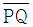
는 2차 출력,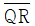
는 2차 동손,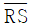
는 1차 동손,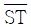
는 철손이다.)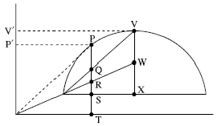
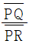
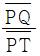
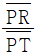
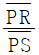
(정답률: 39%)
58. 6극, 30㎾, 380V, 60㎐의 정격을 가진 Y결선 3상 유도전동기의 구속시험 결과 선간전압 50V, 선전류 60V, 3상 입력 2.5㎾, 단자 간의 직류 저항은 0.18Ω이었다. 이 전동기를 정격전압으로 기동하는 경우 기동 토크는 약 몇 N·m인가?
- 71.7
- 115.53
- 702.33
- 14⑤.32
(정답률: 26%)
59. 직류 분권발전기가 있다. 극수는 6, 전기자 도체수는 600, 각 자극의 자속은 0.0⑤Wb이고 그 회전수가 800rpm일 때 전기자에 유기되는 기전력은 몇 V인가? (단, 여기서 전기자 권선은 파권이라고 한다.)
- 100
- 110
- 115
- 120
(정답률: 52%)
60. 정격용량 10000kVA, 정격전압 6000V, 1상의 동기임피던스가 3Ω인 3상 동기발전기가 있다. 이 발전기의 단락비는 약 얼마인가?
- 1.0
- 1.2
- 1.4
- 1.6
(정답률: 35%)
4과목: 회로이론 및 제어공학
61. 3상 평형회로에서 전압계 V, 전류계 A, 전력계 W를 그림과 같이 접속했을 때, 전압계의 지시가 100V, 전류계의 지시가 30A, 전력계의 지시 1.5㎾이었다. 이 회로에서 선간전압(Vab)과 선전류(Ia) 간의 위상차는 몇 도(°)인가? (단, 3상 전압의 상순은 a-b-c이다.)
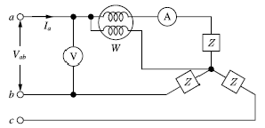
- 15°
- 30°
- 45°
- 60°
(정답률: 31%)
62. 대칭 6상 성형결선 전원의 상전압의 크기가 100V일 때 이 전원의 선간접압의 크기(V)는?
- 200
- 100√3
- 100√2
- 100
(정답률: 40%)
63. 무한장 무손실 전송선로의 임의의 위치에서 전압이 10V이었다. 이 선로의 인덕턴스가 10μH/m이고, 해당 위치에서 전류가 1A일 때 이 선로의 커패시턴스(㎌/m)는?
- 0.001
- 0.01
- 0.1
- 1
(정답률: 38%)
64.
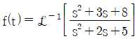
는?- δ(t)＋e-t(cos2t－sin2t)
- δ(t)＋e-t(cos2t＋2sin2t)
- δ(t)＋e-t(cos2t－2sin2t)
- δ(t)＋e-t(cos2t＋sin2t)
(정답률: 26%)
65. 그림의 회로에서 a, b 양단에 220V의 전압을 인가했을 때 전류 I가 1A이었다. 저항 R은 몇 Ω인가?
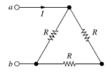
- 100
- 150
- 220
- 330
(정답률: 45%)
66. 그림의 회로에서 t＝0(s)에 스위치(S)를 닫았을 때 인덕터(L) 양단의 전압 vL(t)는?
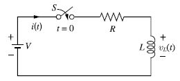
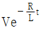
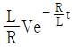
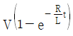
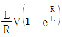
(정답률: 30%)
67. 다음과 같은 비정현파 교류 전압 v(t)와 전류 i(t)에 의한 평균전력 P(W)와 피상전력 Pa(VA)는 약 얼마인가?
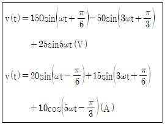
- P＝283.5, Pa＝1542
- P＝283.5, Pa＝2155
- P＝533.5, Pa＝1542
- F＝533.5, Pa＝2155
(정답률: 28%)
68. 상순이 a-b-c인 회로에서 3상 전압이 Va(V), Vb(V), Vc(V)일 때 역상분 전압 V2(V)는?
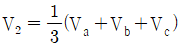
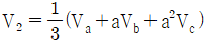
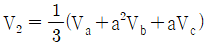
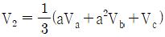
(정답률: 57%)
69. 4단자 정수가 각각 A1, B1, C1, D1과 A2, B2, C2, D2인 2개의 4단자망을 그림과 같이 종속으로 접속하였을 때 전체 4단자 정수 중 A와 B는? (단,
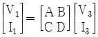
)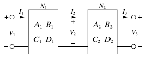
- A = A1＋A2, B = B1＋B2
- A = A1A2, B = B1B2
- A = A1A2＋B2C1, B = B1B2＋A2D1
- A = A1A2＋B1C2, B = A1B2＋B1D2
(정답률: 42%)
70. 회로에서 인덕터의 양단 전압 VL의 크기는 약 몇 V인가? (단, V1 = 100∠0°, V2 = 100∠60°)
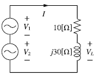
- 164
- 174
- 150
- 200
(정답률: 28%)
71. 제어시스템의 특성방정식이 s3＋11s2＋2s＋20 = 0와 같을 때, 이 특성방정식에서 s 평면의 오른쪽에 위치하는 근은 몇 개인가?
- 0
- 1
- 2
- 3
(정답률: 47%)
72. 다음과 같은 상태방정식으로 표현되는 제어시스템에 대한 특성방정식의 근은?
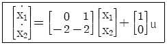
- -1 ± j
- -1 ± j√2
- -1 ± j2
- -1 ± j√3
(정답률: 42%)
73. 블록선도에서 ⓐ에 해당하는 신호는?
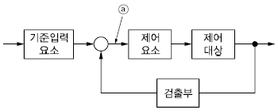
- 조작량
- 제어량
- 기준입력
- 동작신호
(정답률: 50%)
74. 논리식
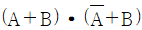
와 등가인 것은?- A
- B
- A·B
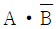
(정답률: 56%)
75. 다음은 근궤적의 성질(규칙)에 대한 내용의 일부를 나타낸 것이다. ( ) 안에 알맞은 내용은?
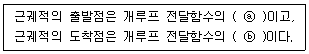
- ⓐ 영점, ⓑ 영점
- ⓐ 영점, ⓑ 극점
- ⓐ 극점, ⓑ 영점
- ⓐ 극점, ⓑ 극점
(정답률: 47%)
76. 그림의 블록선도에서 출력 C(s)는?
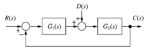
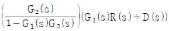
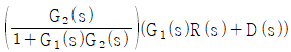
(정답률: 45%)
77. 제어시스템의 전달함수가 G(s)＝e-10s이고, 주파수가 ω＝10rad/sec일 때 이 제어시스템의 이득(dB)은?
- 20
- 0
- -20
- -40
(정답률: 26%)
78. 단위계단 함수(f(t)＝u(t))의 라플라스 변환 함수 (F(s))와 z 변환 함수(F(z))는?
(정답률: 52%)
79. 전달함수가 인 2차 제어시스템의 감쇠 진동 주파수(ωd)는 약 몇 rad/sec인가?
- 4.0
- 4.3
- 5.6
- 6.0
(정답률: 31%)
80. 신호흐름선도의 전달함수 는?
- 24/5
- 28/5
- 32/5
- 36/5
(정답률: 48%)
5과목: 전기설비기술기준 및 판단기준
81. 풍력발전설비의 시설기준에 대한 설명으로 틀린 것은?
- 간선의 시설 시 단자의 접속은 기계적, 전기적 안전성을 확보하도록 하여야 한다.
- 나셀 등 풍력발전기 상부시설에 접근하기 위한 안전한 시설물을 강구하여야 한다.
- 100㎾ 이상의 풍력터빈은 나셀 내부의 화재 발생 시, 이를 자동으로 소화할 수 있는 화재방호설비를 시설하여야 한다.
- 풍력발전기에서 출력배선에 쓰이는 전선은 CV선 또는 TFR-CV선을 사용하거나 동등 이상의 성능을 가진 제품을 사용하여야 한다.
(정답률: 42%)
82. 의료장소의 안전을 위한 비단락보증 절연변압기에 대한 설명으로 옳은 것은?
- 정격출력은 5kVA 이하이다.
- 정격출력은 10kVA 이하이다.
- 2차측 정격전압은 직류 250V 이하이다.
- 2차측 정격전압은 교류 300V 이하이다.
(정답률: 37%)
83. 동기조상기를 시설하는 경우 계측하는 장치를 시설하여 계측하는 대상으로 틀린 것은?
- 동기조상기의 전압
- 동기조상기의 전력
- 동기조상기의 회전자의 온도
- 동기조상기의 베어링의 온도
(정답률: 43%)
84. 변전소에서 사용전압 154kV 변압기를 옥외에 시설할 때 취급자 이외의 사람이 들어가지 않도록 시설하는 울타리는 울타리의 높이와 울타리에서 충전부분까지의 거리의 합계를 몇 m 이상으로 하여야 하는가?
- 5
- 5.5
- 6
- 6.5
(정답률: 55%)
85. 케이블 트레이공사에 사용하는 케이블 트레이에 적합하지 않은 것은?
- 케이블 트레이의 안전율은 1.5 이상이어야 한다.
- 금속재의 것은 내식성 재료의 것으로 하지 않아도 된다.
- 전선의 피복 등을 손상시킬 돌기 등이 없이 매끈하여야 한다.
- 지지대는 트레이 자체 하중과 포설된 케이블 하중을 충분히 견딜 수 있는 강도를 가져야 한다.
(정답률: 59%)
86. 교통신호등 제어장치의 2차측 배선의 최대사용전압은 몇 V 이하이어야 하는가?
- 150
- 250
- 300
- 400
(정답률: 44%)
87. 피뢰설비 중 인하도선시스템의 건축물·구조물과 분리되지 않은 피뢰시스템인 경우에 대한 설명으로 틀린 것은?
- 인하도선의 수는 1가닥 이상으로 한다.
- 벽이 불연성 재료로 된 경우에는 벽의 표면 또는 내부에 시설할 수 있다.
- 병렬 인하도선의 최대 간격은 피뢰시스템 등급에 따라 Ⅳ 등급은 20m로 한다.
- 벽이 가연성 재료인 경우에는 0.1m 이상 이격하고, 이격이 불가능 한 경우에는 도체의 단면적을 100mm2 이상으로 한다.
(정답률: 38%)
88. 급전용변압기는 교류 전기철도의 경우 어떤 변압기의 적용을 원칙으로 하고, 급전계통에 적합하게 선정하여야 하는가?
- 3상 정류기용 변압기
- 단상 정류기용 변압기
- 3상 스코트결선 변압기
- 단상 스코트결선 변압기
(정답률: 47%)
89. 저압 가공전선이 도로·횡단보도교·철도 또는 궤도와 접근 상태로 시설되는 경우, 저압 가공전선과 도로·횡단보도교·철도 또는 궤도 사이의 이격거리는 몇 m 이상이어야 하는가? (단, 저압 가공전선과 도로·횡단보도교·철도 또는 궤도와의 수평이격거리가 0.8m인 경우이다.)
- 3
- 3.5
- 4
- 4.5
(정답률: 29%)
90. 내부피뢰시스템 중 금속제 설비의 등전위본딩에 대한 설명 이다. 다음 ( )에 들어갈 내용으로 옳은 것은?
- ⓐ 0.5, ⓑ 15
- ⓐ 0.5, ⓑ 20
- ⓐ 1.0, ⓑ 15
- ⓐ 1.0, ⓑ 20
(정답률: 32%)
91. 주택의 전기저장장치의 축전지에 접속하는 부하 측 옥내 전로에 지락이 생겼을 때 자동적으로 전로를 차단하는 장치를 시설한 경우에 주택의 옥내전로의 대지전압은 직류 몇 V까지 적용할 수 있는가?
- 150
- 300
- 400
- 600
(정답률: 21%)
92. 인입용 비닐절연전선을 사용한 저압 가공전선을 횡단보도교 위에 시설하는 경우 노면상의 높이는 몇 m 이상으로 하여야 하는가?
- 3
- 3.5
- 4
- 4.5
(정답률: 38%)
93. 사용전압이 22.9kV인 특고압 가공전선이 건조물 등과 접근상태로 시설되는 경우 지지물로 A종 철근 콘크리트주를 사용하면 그 경간은 몇 m 이하이어야 하는가? (단, 중성선 다중접지 방식의 것으로서 전로에 지락이 생겼을 때에 2초 이내에 자동적으로 이를 전로로부터 차단하는 장치가 되어 있는 것에 한한다.)
- 100
- 150
- 250
- 400
(정답률: 29%)
94. 사용전압이 22.9kV인 특고압 가공전선로에서 1㎞마다 중성선과 대지 사이의 합성전기저항값은 몇 Ω 이하이어야 하는가? (단, 중성선 다중접지 방식의 것으로서 전로에 지락이 생겼을 때에 2초 이내에 자동적으로 이를 전로로부터 차단하는 장치가 되어 있는 것에 한한다.)
- 5
- 10
- 15
- 30
(정답률: 17%)
95. 직류회로에서 선 도체 겸용 보호도체를 말하는 것은?
- PEM
- PEL
- PEN
- PET
(정답률: 43%)
96. 지중 전선로에 있어서 폭발성 가스가 침입할 우려가 있는 장소에 시설하는 지중함은 크기가 몇 m3 이상일 때 가스를 방산시키기 위한 장치를 시설하여야 하는가?
- 0.25
- 0.5
- 0.75
- 1.0
(정답률: 51%)
97. 특고압으로 시설할 수 없는 전선로는?
- 옥상전선로
- 지중전선로
- 가공전선로
- 수중전선로
(정답률: 44%)
98. 사용전압이 60kV 이하인 경우 전화선로의 길이 12km 마다 유도전류는 몇 ㎂를 넘지 않도록 하여야 하는가?
- 1
- 2
- 3
- 5
(정답률: 54%)
99. 발전기의 내부에 고장이 생긴 경우, 발전기를 자동적으로 전로로부터 차단하는 장치를 설치하여야 하는 발전기의 최소용량[kVA]은?
- 1000
- 1500
- 10000
- 15000
(정답률: 49%)
100. 소세력회로의 최대 사용전압이 15V라면, 절연변압기의 2차 단락전류는 몇 A 이하이어야 하는가?
- 1
- 3
- 5
- 8
(정답률: 21%)